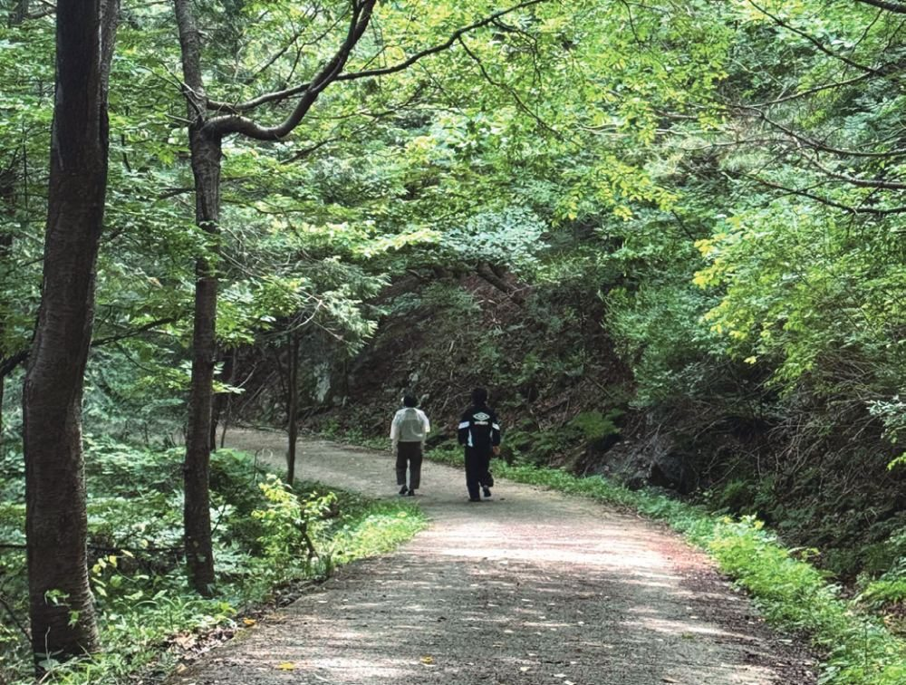
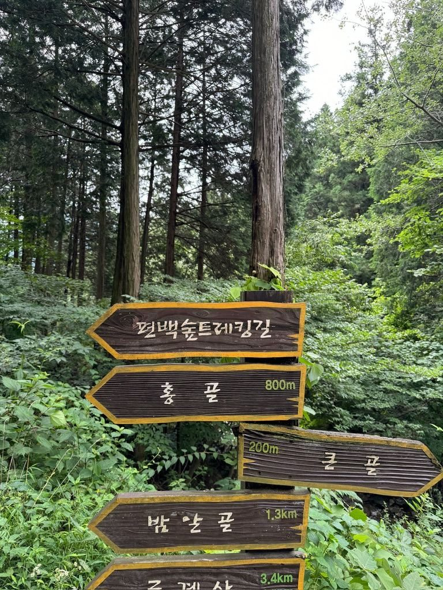
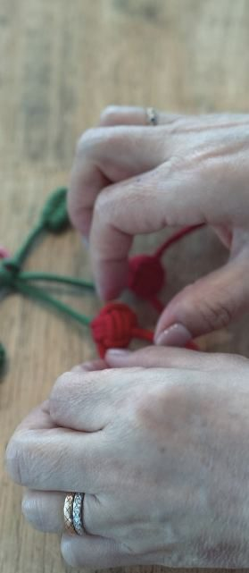
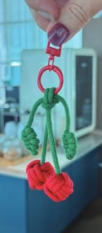
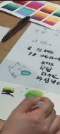
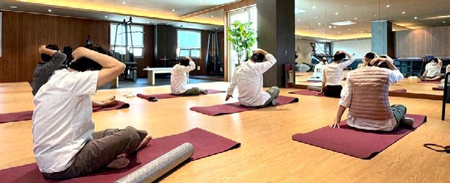

입원하지 않아도 프로그램에 참여할 수 있나요?
입원하지 않으셔도 통원하시면서 참여하실 수 있습니다. 하일렌요양병원의 힐링 프로그램은 치료 기간에도 몸을 움직이고, 마음을 돌보고, 암 공부를 원내에서 이어 가실 수 있도록 운영합니다. 원내에서는 낮 뜨개공방·매듭공예, 저녁 요가·라인댄스·명상·캘리그라피가 이어집니다. 오후의 암재활 운동치료는 프로그램이 아니라 치료로 따로 운영합니다. 암기공은 매달 열립니다. 편백숲 트레킹은 컨디션이 허락하는 날 함께 나섭니다.

- 대상
- 입원·외래(통원) 환자분 모두
- 장소
- 암재활 운동치료·요가·라인댄스는 3층 재활치료실 · 뜨개공방·매듭공예·명상·암기공·주말영화는 10층 스카이라운지와 힐링프로그램실
- 시간대
- 뜨개공방·매듭공예는 낮 1시 30분 · 암재활 운동치료는 오후 2시 30분부터 한 시간 · 저녁 프로그램은 6시 30분과 6시 40분 · 주말영화는 낮 1시
- 요일·일자
- 월별 공지로 안내합니다. 이달의 요일표는 소식의 2026년 10월 프로그램 안내에 있습니다.
- 신청·문의
- 카카오톡 채널 · 병동 간호사실(입원) · 원내 상담실(외래) · 062-439-1000
일부 프로그램 설명에는 관련 연구와 진료 지침을 함께 적었습니다. 이는 연구가 살펴본 결과와 지침이 권고하는 내용입니다. 하일렌요양병원 프로그램의 효과를 약속하는 말은 아닙니다.
편백숲 트레킹
컨디션이 허락하는 날 함께 나서는 걷기입니다.

참여를 원하시는 분들과 일정을 맞춰 진행하고, 그날의 몸 상태에 따라 거리를 조절합니다. 처음엔 짧게 걷다가 조금씩 늘려 가시는 분들이 많습니다. 코스 난이도는 고르실 수 있습니다. 나란히 걷다 보면 어느새 이웃이 되고, 내려오는 길엔 이야기가 남습니다.
숲 활동 연구들을 묶어 분석한 결과, 숲에서 활동한 후 혈압과 침 속 스트레스 호르몬(코르티솔)이 도시에서 활동한 경우보다 낮았습니다(Qiu 외, 2023). 우울과 불안 점수가 짧은 기간 줄었다는 분석도 있습니다(Kotera 외, 2020). 다만 연구마다 결과 차이가 크고 연구 설계에 한계가 있습니다. 그래서 하일렌요양병원은 숲 걷기를 건강 관리를 보완하는 활동으로 안내합니다.
숲길에 나서실 때는 긴 옷을 입어 주시고, 돌아오신 후에는 몸에 진드기가 붙지 않았는지 살펴 주세요(질병관리청). 걷다가 어지럽거나 가슴이 아프면 바로 걸음을 멈춰 주세요.
낮, 뜨개공방·매듭공예·캘리그라피
손끝에 집중하는 시간입니다.



낮 프로그램은 1시 30분에 10층 스카이라운지에서 열립니다. 환자분들의 요청으로 시작한 뜨개공방이 있습니다. 매듭공예에서는 팔찌와 키링을 엮고, 캘리그라피에서는 마음에 담아 둔 문장을 손거울에 새깁니다. 다도와 천연체험공방도 10층 스카이라운지에서 열립니다. 한 코, 한 매듭, 한 획에 집중하는 동안 생각이 단순해지고 호흡이 고릅니다. 완성한 작품은 병실 머리맡에, 가방 한쪽에, 선물로 건넨 가족의 손에 남습니다.
암이 다시 생길까 하는 두려움을 살핀 연구가 있습니다. 13개국 9,311명의 자료를 분석한 이 연구에서 그 두려움은 암 종류나 진단 후 지난 기간과 관계없이 상당수에게 나타났습니다(Luigjes-Huizer 외, 2022). 이 연구는 두려움이 얼마나 흔한지를 본 것이고, 뜨개공방이나 매듭공예가 두려움을 줄인다는 결과는 아닙니다. 걱정 때문에 잠들기 어렵거나 식사를 잘 못 하시는 날이 이어지면 주치의에게 편하게 말씀해 주세요.
다도는 강사와 함께 진행합니다. 녹차가 암을 예방한다는 효과는 아직 입증되지 않았습니다(코크란 체계적 문헌고찰, 2020). 뜨거운 차를 즐겨 드시면 식도암 위험이 높아질 수 있습니다(국가암정보센터). 드시는 약이나 받고 계신 항암 치료에 따라 피하셔야 할 차도 있으니, 다도에 참여하시기 전에 주치의에게 물어봐 주세요.
암재활 운동치료는 치료입니다
근력·균형·일상 동작을 익히는 한 시간입니다.

암재활 운동치료는 힐링 프로그램과 별개로, 3층 재활치료실에서 하는 운동 치료입니다. 입원 환자분과 외래·단기입원 환자분 모두 받으실 수 있습니다. 오후 2시 30분부터 한 시간 동안 진행합니다. 근력, 균형, 일상 동작을 익힙니다. 국립암센터 「암생존자를 위한 운동」의 기본 동작 여덟 가지를 바탕으로, 횟수를 세며 자세를 바로잡아 드립니다. 운동 전후로는 스트레칭을 합니다. 퇴원 후 집에서도 하실 수 있는 동작입니다. 수술한 부위와 시기에 따라 피해야 할 동작은 물리치료사가 정한 기준으로 바꿉니다. 처음 오시는 분은 수술 부위와 수술 날짜만 말씀해 주시면 됩니다. 주치의와 함께 정한 범위 안에서 암재활 운동치료를 무리 없이 하실 수 있도록 돕습니다. 요일은 월별 안내를 확인해 주세요.
저녁, 움직임과 마음
요가·라인댄스·명상·캘리그라피가 저녁 시간에 이어집니다.

요가는 저녁 6시 40분에 3층 재활치료실에서 진행합니다. 외래 환자분들도 저녁 시간에 참여하실 수 있습니다. 라인댄스는 저녁 6시 30분에 3층 재활치료실에서 진행합니다. 캘리그라피는 저녁 6시 30분에 10층 스카이라운지에서 진행합니다. 명상은 저녁 6시 30분에 10층 힐링프로그램실에서 김성훈 수석병원장이 직접 진행합니다.
요가·라인댄스와 운동량
암 생존자에게 권하는 운동량은 일주일에 150분 이상 중간 강도로 몸을 움직이고, 일주일에 두 번 이상 근력 운동을 하는 것입니다(국가암정보센터). 중간 강도는 숨이 조금 차도 옆 사람과 이야기를 나눌 수 있는 정도입니다. 150분은 하루 30분씩 닷새에 해당합니다. 다만 수술 직후나 치료 중에는 이 기준이 그대로 맞지 않을 수 있어, 어디까지 움직여도 되는지는 주치의와 상의해 주세요.
미국스포츠의학회(ACSM)가 주관한 국제 합의(2019)는 운동이 불안과 우울 증상, 피로를 줄이고 신체 기능과 삶의 질을 높인다는 근거가 충분하다고 보았습니다. 이 합의는 암을 겪은 모든 분께 오래 앉거나 누워만 지내지 않도록 권합니다.
요가는 통합종양학회(SIO)·미국임상종양학회(ASCO) 지침(2023)에 유방암 환자의 불안과 우울 증상에 쓸 수 있는 방법으로 실려 있습니다. 다른 암종에서는 아직 근거가 적습니다.
라인댄스는 음악에 맞춰 정해진 발동작을 이어 가는 유산소 운동입니다. 음악이 빨라지면 운동 강도가 올라가니, 앞에서 말씀드린 중간 강도를 넘지 않도록 속도를 맞춰 주세요.
뼈 전이가 있으시거나 피로와 어지럼이 심한 날에는 운동 프로그램에 참여하시기 전에 주치의에게 먼저 말씀해 주세요.
명상
암 환자의 20~40%가 몸과 마음의 괴로움인 디스트레스를 겪습니다. 감정 조절을 돕는 방법으로는 명상과 이완이 소개돼 있습니다(국가암정보센터). 치료 중과 치료 후의 불안·우울 증상에는 마음챙김 기반 프로그램을 제공하도록 권하는 진료 지침도 있습니다(SIO·ASCO 지침, 2023).
다만 공황 증상이나 외상 경험이 있는 분은 호흡과 몸의 감각에 집중할 때 불편이 커질 수 있습니다. 이런 분은 명상에 참여하시기 전에 담당 의료진과 먼저 상의해 주세요.
암기공, 암을 이기는 공부
진료실에서 묻지 못한 것을 천천히 배우는 시간입니다.
'암기공'은 암을 이기는 공부의 줄임말입니다. 진료실에서는 시간이 짧아 묻지 못했던 것들을 강의실에서 천천히 배웁니다. 김성훈 수석병원장과 장익완 병원장이 직접 강의하고, 강의가 끝나면 질문을 받습니다. 지금 받고 계신 치료의 원리와 치료 전·중·후에 몸이 어떻게 달라지는지, 생활 속에서 어떻게 관리하시면 되는지를 다룹니다.
그동안 자율신경계와 면역, 스트레스와 면역, 비타민C, 비타민D, 싸이모신 알파1, 고주파온열암치료를 주제로 강의했습니다. 이춘기 자문의의 항암 토크 콘서트와 대학병원 교수 초청 특강도 열어 왔습니다. 환자분과 가족이 병과 치료를 바르게 이해하고, 치료를 마친 후에도 이어 갈 관리 계획을 스스로 세우실 수 있도록 돕습니다. 10층 힐링프로그램실에서 매달 열리는 배움의 시간에 편하게 와 주세요. 이달의 일자와 주제는 소식의 월별 프로그램 공지에 있습니다.
주말영화
주말영화는 토·일 낮 1시에 10층 힐링프로그램실에서 상영합니다.
요일과 일자
요일과 일자는 달마다 바뀌고, 시간도 병원 사정에 따라 바뀔 수 있습니다. 여기에는 장소와 시간대만 적어 두었으니, 이달의 요일표는 소식의 2026년 10월 프로그램 안내에서 확인해 주세요.
예정 행사
- 예정된 행사는 소식에서 먼저 알려 드립니다.
지난 행사
원내에서 열린 특강과 콘서트를 연도와 행사명, 강의 제목으로 남겨 둡니다.
참여 안내
상태에 따라 참여하실 수 있는 프로그램이 달라서, 참여 전에 담당 의료진과 상의해 주세요.
입원 환자분과 외래(통원) 환자분 모두 참여하실 수 있습니다. 신청·문의는 카카오톡 채널, 병동 간호사실(입원), 원내 상담실(외래)로 해 주세요.
프로그램 참여는 컨디션이 허락하는 날에 하시면 되고, 힘든 날은 쉬셔도 됩니다. 원치 않는 치료나 프로그램은 강요하지 않습니다. 치료를 바꾸거나 받지 않겠다는 뜻을 말씀하시면 기록하고 존중합니다.
프로그램 예약은 카카오톡 채널에서, 입원·외래·단기입원 상담은 원내 상담실에서 도와 드립니다. 궁금한 점이 있으시면 언제든 편하게 물어봐 주세요.
제공 하일렌요양병원 · 갱신 2026-10-23